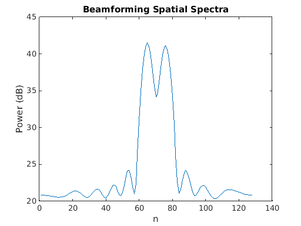
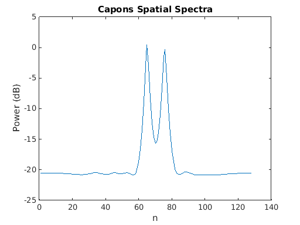
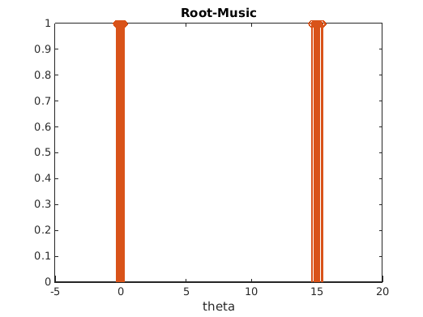
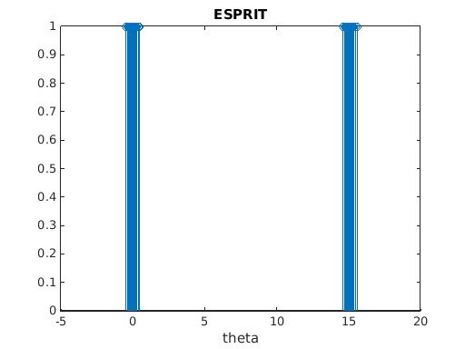
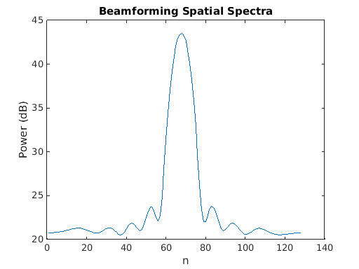
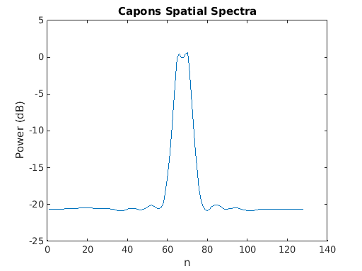
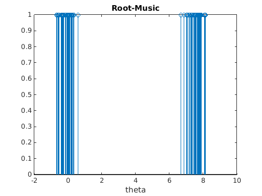
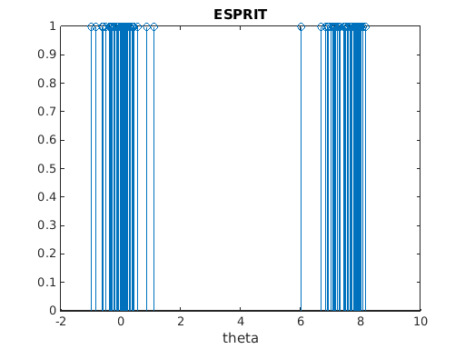

EE 779 : Assignment 3 | Q-1
Meet Pragnesh Shah, 13D070003
Contents
a) Theta = 15
close all; clear all; P = eye(2); n_samples = 128; n_iter = 50; y = zeros(10, 100, 50); beamf_phi = zeros(50, n_samples); capon_phi = zeros(50, n_samples); theta1 = zeros(50, 2); theta2 = zeros(50, 2); theta = 15; for i=1:n_iter, y(:,:,i) = uladata([0, theta], P, 100, 1, 10, 0.5); beamf_phi(i,:) = beamform(y(:,:,i), n_samples, 0.5); capon_phi(i,:) = capon_sp(y(:,:,i), n_samples, 0.5); theta1(i,:) = root_music_doa(y(:,:,i), 2, 0.5); theta2(i,:) = esprit_doa(y(:,:,i), 2, 0.5); end phi_avg_beam(1:n_samples) = mean(beamf_phi(:,1:n_samples)); phi_avg_capon(1:n_samples) = mean(capon_phi(:,1:n_samples)); beamf = phi_avg_beam; capon = phi_avg_capon; root_theta = theta1; espirit_theta = theta2;
a) i. Beamforming Method
fig = figure; plot(20*log10(beamf)) xlabel('n') ylabel('Power (dB)') title('Beamforming Spatial Spectra');
a) ii. Capon Method
fig = figure; plot(20*log10(capon)) xlabel('n') ylabel('Power (dB)') title('Capons Spatial Spectra');
a) iii. Root-Music Estimate
fig = figure; stem(root_theta(:), ones(100,2)); title('Root-Music') xlabel('theta')
a) iv. ESPRIT Estimate
fig = figure; stem(espirit_theta(:), ones(100,1)); title('ESPRIT') xlabel('theta')
b) Theta = 7.5
theta = 7.5; for i=1:n_iter, y(:,:,i) = uladata([0, theta], P, 100, 1, 10, 0.5); beamf_phi(i,:) = beamform(y(:,:,i), n_samples, 0.5); capon_phi(i,:) = capon_sp(y(:,:,i), n_samples, 0.5); theta1(i,:) = root_music_doa(y(:,:,i), 2, 0.5); theta2(i,:) = esprit_doa(y(:,:,i), 2, 0.5); end phi_avg_beam(1:n_samples) = mean(beamf_phi(:,1:n_samples)); phi_avg_capon(1:n_samples) = mean(capon_phi(:,1:n_samples)); beamf = phi_avg_beam; capon = phi_avg_capon; root_theta = theta1; espirit_theta = theta2;
b) i. Beamforming Method
fig = figure; plot(20*log10(beamf)) xlabel('n') ylabel('Power (dB)') title('Beamforming Spatial Spectra');
b) ii. Capon Method
fig = figure; plot(20*log10(capon)) ylabel('Power (dB)') xlabel('n') title('Capons Spatial Spectra');
b) iii. Root-Music Estimate
fig = figure; stem(root_theta(:), ones(100,1)); title('Root-Music') xlabel('theta')
b) iv. ESPRIT Estimate
fig = figure; stem(espirit_theta(:), ones(100,1)); title('ESPRIT') xlabel('theta')
Notes and Conclusion
Since the experiments are stochastic in nature, a single run of the results is not credible. Hence I run the code for n_iters = 100 and then take the mean of the results to maintain the credibility of the results.
theta = 15
All methods are able to resolve the sources distinctly as can be seen from the peaks in the plots.
Capons method gives a better estimate as the peaks are sharper thus have low variance .
Root Music estimates are very dense around the actual mean value, whilst the ESPIRIT methods are spread over the mean and the estimates have a higher variance .
Thus Capon > Beamforming and RootMusic > ESPRIT .
theta = 7.5
Beamforming isn't able to resolve the peaks, Capons is able to get two peaks but the peaks cannot be resolved as nicely as in the former case of theta = 15.
Root Music estimates are very dense around the actual mean value, whilst the ESPIRIT methods are spread over the mean and the estimates have a higher variance . But both Root Music and ESPIRIT estimates for theta = 7.5 have a larger variance than in the case of theta = 15 .
Thus Capon > Beamforming and RootMusic > ESPRIT .